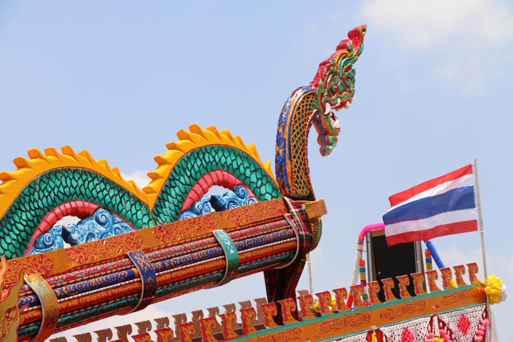

ประเพณีภาคอีสาน
ประเพณีบุญบั้งไฟ
ชาวจังหวัดยโสธรร้อยละ ๘๕ ประกอบอาชีพเกษตรกรรม ชาวยโสธรจึงจัดประเพณีบุญบั้งไฟเป็นการทำบุญประจำปีทุกปีในช่วงเดือนพฤษภาคม ซึ่งเป็นช่วงก่อนฤดูการทำนา เป็นพิธีขอฝนจากพญาแถนให้ฝนตกต้องตามฤดูกาล
|  |  |
ประเพณีแห่เทียนเข้าพรรษา
สมัยก่อนมีภิกษุได้เดินไปเหยียบย่ำข้าวกล้าในนาของชาวบ้านทำให้ได้รับความเดือดร้อน ดังนั้นพระพุทธเจ้าจึงได้อนุญาติให้ภิกษุสามเณรอยู่จำพรรษาที่วัด เป็นเวลา 3 เดือนคือในช่วงวันแรมหนึ่งค่ำเดือนแปด ถึงวันขึ้นสิบห้าค่ำเดือน 11 ซึ่งเป็นช่วงสิ้นสุดการเก็บเกี่ยวของชาวบ้านพอดีในช่วงเข้าพรรษานี้ประชาชนจะนำเทียนไปถวายพระภิกษุเพราะเชื่อว่าจะทำให้ตนเฮลียวแลาดมีไหวพริบปฏิภาณประดุจขี้ผึ้งที่ใช้ทำเทียนที่ได้จากรังผึ้ง
 |
 |